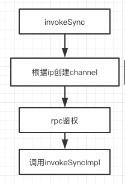

本文较长，代码后面给了方法简图，希望给你帮助
发送的方式
- 同步发送
- 异步发送
消息的类型
- 普通消息
- 顺序消息
- 事务消息
发送同步消息的时序图
为了防止读者朋友嫌烦，可以看下时序图，后面我也会给出方法的简图
源码示例【发送同步消息】
调用DefaultMQProducer.send()发送同步消息
同时需要设置发送的nameSrvAddr\producerGroupName
可以设置发送的超时时间，(默认3s), msgQueueNum(默认4个), 生产端发送异步消息失败重试次数(默认2次)，同步消息无重试次数
1 | public class Producer { |
步骤三 send方法内部调用sendDefaultImpl()
1 | private SendResult sendDefaultImpl( |
sendDefaultImpl方法简图

步骤四 构建发送参数，使用netty发送消息[sendKernelImpl]
1 | private SendResult sendKernelImpl(final Message msg, |
方法简图

步骤七 使用netty发送同步消息[invokeSync]
this.mQClientFactory.getMQClientAPIImpl().sendMessage(）
内部调用
- 异步消息调用的是 NettyRemotingClient.invokeAsync方法
- 同步消息调用的是 NettyRemotingClient.invokeSync方法
下面跟着代码查看invokeSync方法
1 |
|
方法简图

步骤八 使用netty发送同步消息[invokeSyncImpl]、
1 | public RemotingCommand invokeSyncImpl(final Channel channel, final RemotingCommand request, |
方法简图
整体重要步骤
- 用send方法发送同步消息
- 判断发送service是否处于running状态
- 检验发送的参数 如topic是否为空
- 根据topicName调用tryToFindTopicPublishInfo方法获取topic详情，里面有这个topic的队列
- 选择其中一个队列，选择的策略是：产生一个随机数，hash%brokeSize 然后hash+1, 同时把随机数记录下来，下次还是使用这个随机数
- 获取broke的IP地址，如果本地没有，则从nameserver中获取
- 如果开启了vipchannel，则端口-2
- 尝试压缩消息，消息数不大于4K
- 构建消息头
- 根据IP创建channel
- rpc鉴权
- 创建responseFuture, 并把他放到reponseTable中
- 使用channel.writeAndFlush发起netty请求，并建立监听
- 使用countDownLatch挂起线程，等待收到netty的返回值
- 返回结果
结语
刚开始开发送的代码，觉得太长了，不想看了，现在想想他的逻辑挺清晰的，能够帮助你看清别人的开源框架整个构建构成